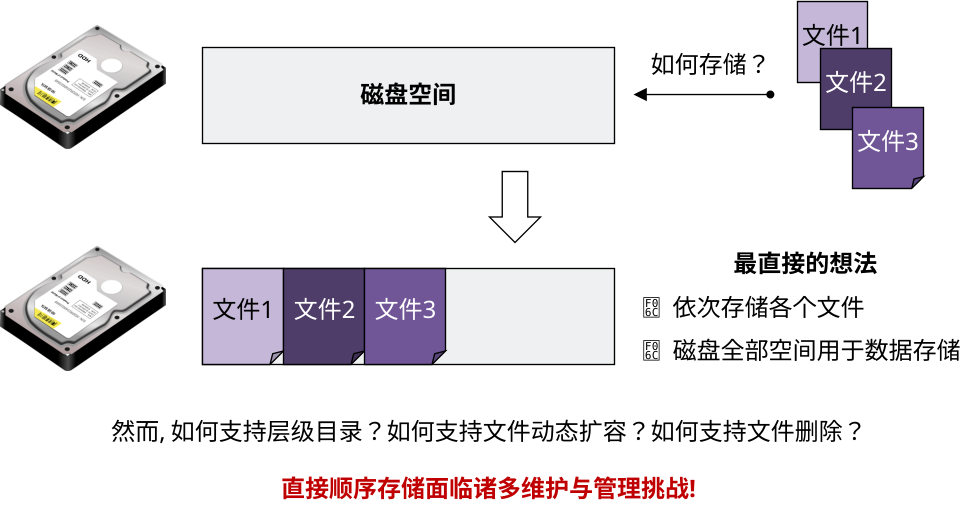
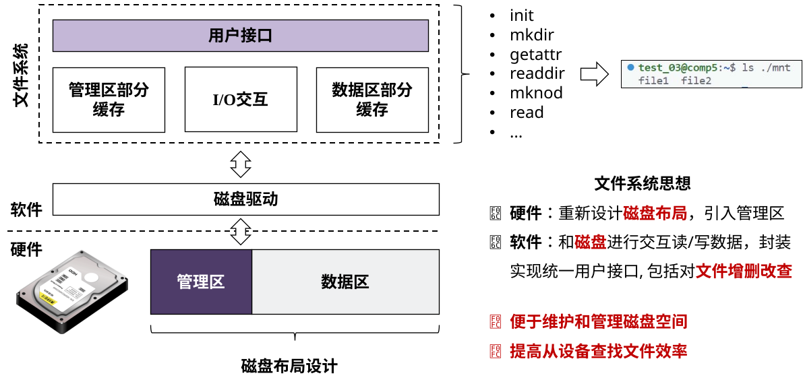
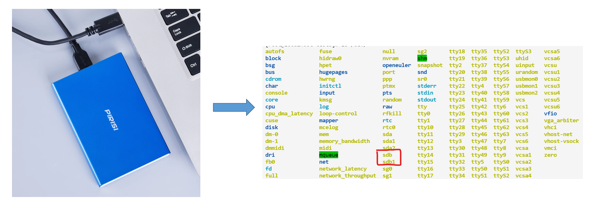
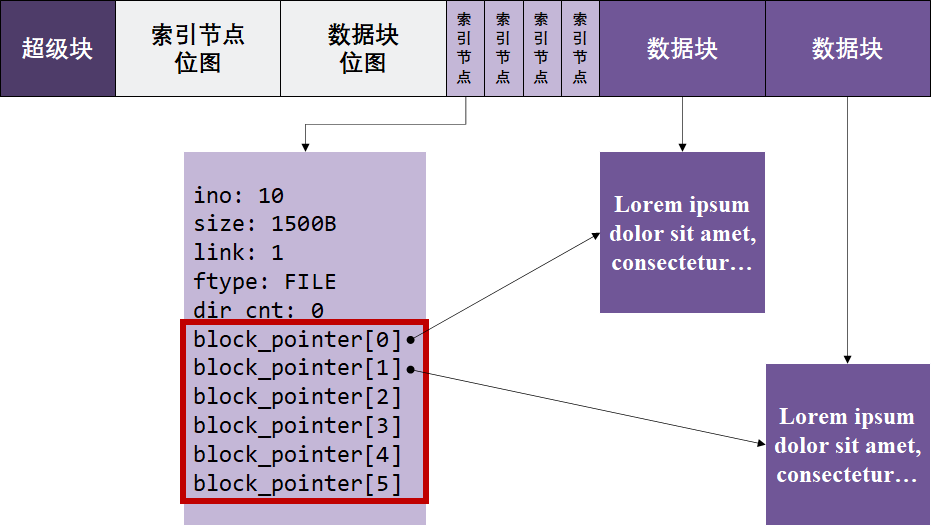
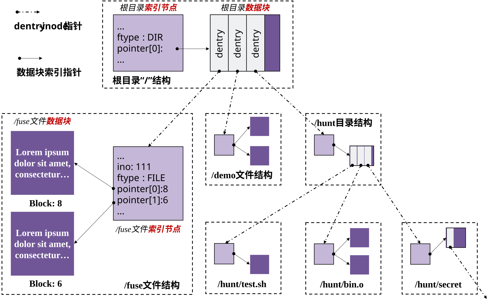
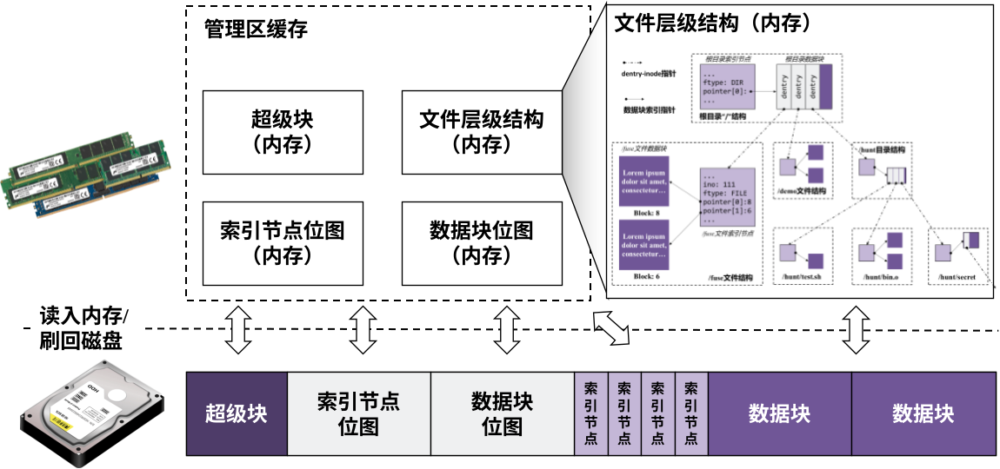
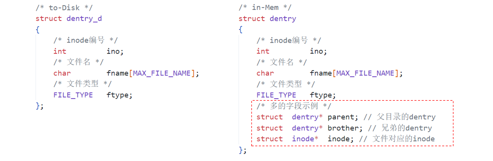
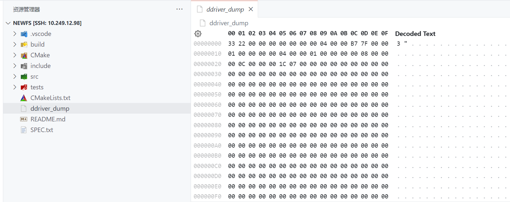
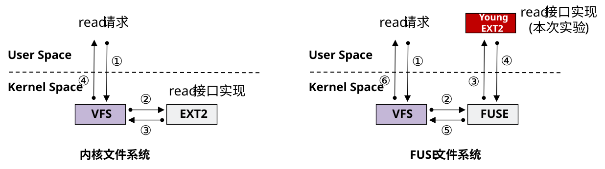
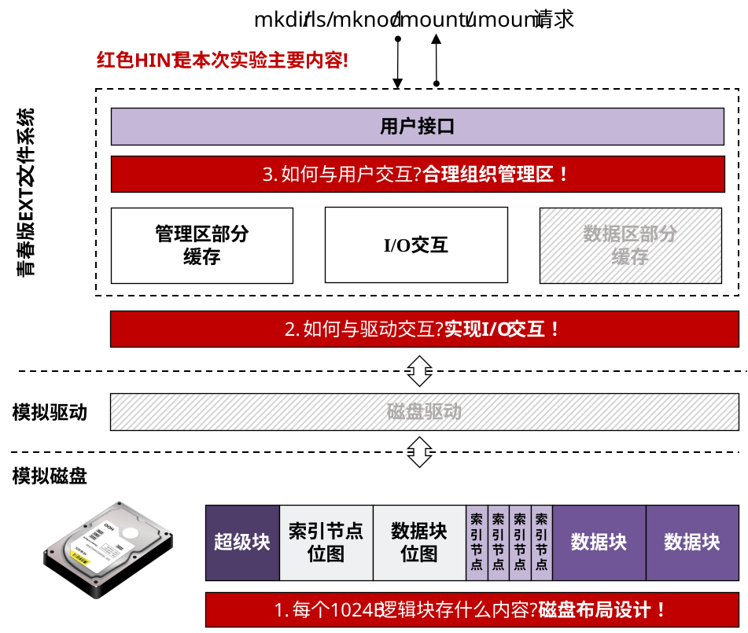

实验原理¶
如何阅读本页
- 任务一最需要先看的是：
2.1 驱动接口、3.1 FUSE 简单示例、3.2 挂载与卸载。 - 任务二最需要先看的是：
1.2 磁盘布局、1.2.3 文件的表示、1.2.4 目录项的表示、1.2.5 in-Mem 与 to-Disk。 - 如果你对文件系统还不熟，建议先把“磁盘上存什么”“内存里管什么”“上层接口怎么接进 FUSE”这三件事分开理解。
1. EXT2文件系统¶
1.1 文件系统及其挂载¶

先从一个最直接的问题开始：为什么不能把文件内容直接顺着写进磁盘就结束？
如果磁盘上只有纯数据区，没有额外的管理信息，那么很快就会遇到这些问题：
- 哪些空间已经被占用，哪些还空着；
- 一个文件从哪里开始、到哪里结束；
- 目录和子文件之间的层级关系怎样表示；
- 删除、扩容、查找时应该怎么定位目标数据。
所以，真正可用的文件系统一定会在“存数据”之外，再维护一套 元数据和管理规则 。

也就是说，文件系统真正要解决的，不只是“把数据写进磁盘”，还包括“怎样组织这些数据，以及怎样把它们按文件和目录的方式管理起来”。从这个角度看，可以把文件系统理解成两层工作：
- 磁盘布局 ：把整块磁盘划分成若干区域，分别存放超级块、位图、索引节点和文件数据。
- 软件接口 ：向下通过驱动和磁盘交互，向上通过
getattr、readdir、mkdir、mknod等接口响应文件请求。
现实系统中已经存在很多不同的文件系统，例如 Windows 常见的 FAT、NTFS，以及 Linux 常见的 EXT2、EXT3、EXT4。它们的目标和细节各不相同，但核心都离不开上面这两层：一方面要设计磁盘上的组织方式，另一方面要向上提供统一可用的文件与目录接口。
实现一个文件系统，通常至少要做三件事
- 先设计好磁盘布局。
- 再封装和磁盘之间的读写交互。
- 最后维护数据结构，并实现对上的文件系统接口。
下面再看“挂载”这件事。
这里可以先给出一个简洁定义：
挂载（mount） ，就是把某个存储设备上的文件系统接到当前系统的目录树中，并为它指定一个访问入口（挂载点），之后就可以像访问普通目录一样访问这套文件系统里的内容。

在 Linux 中，插入一个存储设备后，系统通常只会先在 /dev 下为它提供一个设备入口；这还不等于“已经能按文件树访问里面的数据”。
只有当你明确指定：
- 这块设备要按什么文件系统格式解释；
- 它应该挂到哪个目录下；
之后，这块设备里的内容才会以“目录树”的形式出现在某个挂载点下面。
例如，把某块设备按 EXT2 方式挂到 /mnt 后，ls /mnt 才能看到其中的文件和目录。效果可能类似下面这样：
$ ls /mnt
dir0 file1.txt notes
理解了文件系统一般要解决什么问题、以及“挂载”这件事的作用后，接下来就可以进一步看：一个具体的文件系统会怎样设计自己的磁盘布局和数据结构。
1.2 EXT2文件系统¶
本实验并不是完整复刻真实 EXT2，而是借用它的基本思想，实现一个 青春版 EXT2 文件系统 。本实验说的“青春版 EXT2”，意思是：保留 EXT2 中最核心、最适合教学的那部分结构，例如超级块、位图、inode、数据块和目录项；但把一些更复杂的机制先省掉或简化掉。这样更容易先把文件系统最基本的骨架搭起来。
EXT2 简介
EXT2 的全称是 Second Extended File System ，是 Linux 早期非常经典的一种文件系统。它之所以常被拿来做教学示例，是因为它把文件系统里最核心的几类结构组织得比较清楚：
- 用超级块记录全局信息；
- 用位图管理 inode 和数据块的分配情况；
- 用 inode 描述文件本身；
- 用数据块存放文件内容或目录项。
从学习角度看，EXT2 很适合作为“文件系统基础结构”的入门模型。因为它已经具备了一个成熟文件系统最关键的组织方式，但又不像更现代的文件系统那样引入太多额外机制。
EXT2 的一个典型特点是： 没有日志机制（journaling） 。这意味着它在实现上相对更直接；但如果系统在写盘过程中异常中断，恢复能力会比带日志的文件系统弱一些。后来的 EXT3、EXT4，都可以看作是在 EXT2 基础上的进一步发展。
1.2.1 磁盘布局¶
EXT2 的核心思路是把磁盘分成“元数据区”和“数据区”。在本实验里，简化后的基本布局如下：
可以先把它拆成五块来看。前 3 块更偏“管理信息”，后 2 块则是真正存放文件元数据和文件内容的地方：
- 超级块 ：记录整个文件系统的全局信息和布局信息。后面无论是挂载、分配 inode，还是定位根目录，通常都要先查超级块。
- 索引节点位图 ：记录哪些 inode 已经被占用。这里的“位图”可以简单理解成： 用 1 个比特表示 1 个 inode 是否空闲 ，例如某一位为
1表示对应 inode 已被使用，为0表示还空闲。 - 数据块位图 ：记录哪些数据块已经被占用。它和 inode 位图的思路完全一样，也是 用 1 个比特表示 1 个数据块是否空闲 。
- 索引节点区 ：存放每个文件对应的 inode。一个文件至少要有一个 inode，用来记录文件类型、大小以及它的数据块位置等元数据。
- 数据块区 ：存放文件内容，或者目录中的子目录项数组。也就是说，普通文件的数据放在这里，目录文件的子项信息也放在这里。
对任务二来说，这五个区域都必须存在，顺序也必须正确。
1.2.2 超级块¶
超级块可以理解成文件系统的“总目录”或“配置总表”。后面很多操作都要先查它，因为如果不知道：
- 逻辑块有多大；
- 整块磁盘被分成了哪些区域；
- 每个区域从哪里开始；
- 根目录对应的是哪个 inode；
那么文件系统就根本无法继续往下定位 inode、数据块和目录项。
从实现角度看，挂载时通常首先要读超级块；如果其中的幻数和布局信息有效，就按这些信息恢复文件系统；如果发现超级块还没有被正确初始化，则说明这块磁盘上还没有建立好这套文件系统，需要按既定布局重新初始化。
在本实验里，超级块通常至少会记录：
- 幻数
magic number，用于判断磁盘上是否已经存在该文件系统； - 逻辑块大小、逻辑块总数；
- 各个区域的起始偏移和块数；
- 文件系统支持的 inode 数量、最大文件大小等限制；
- 根目录对应的 inode 编号。
一个示意结构如下：
struct super_block_d
{
uint32_t magic_number; // 幻数，用来识别磁盘上是否已经存在目标文件系统
int blks_size; // 逻辑块大小，例如本实验通常是 1024B
int blks_nums; // 逻辑块总数
int sb_offset; // 超级块区域在磁盘中的起始偏移
int sb_blks; // 超级块区域占多少个逻辑块
int ino_map_offset; // inode 位图区域的起始偏移
int ino_map_blks; // inode 位图区域占多少个逻辑块
/* 其他区域同理，例如 data_map_offset / inode_offset / data_offset */
int ino_max; // 最多支持多少个 inode
int file_max; // 单个文件允许的最大大小
int root_ino; // 根目录对应的 inode 编号
};
超级块里的字段不需要和示例一模一样
你不必完全照着这个结构体去写，但超级块至少应当能回答下面这些问题：
- 这套文件系统的逻辑块大小是多少；
- inode 位图、数据块位图、inode 区、数据块区分别从哪里开始；
- 每个区域各占多少块；
- 根目录对应哪个 inode；
- 文件系统最多支持多少 inode，或单个文件的大小上限是多少。
只要这些关键信息都能被正确记录并在挂载时读出来，字段名和具体组织方式可以按你的实现调整。
1.2.3 文件的表示¶
在这种文件系统组织方式下，一个文件通常由两部分组成：
- inode ：描述文件本身的元数据；
- data ：存放文件内容，或目录项数组。
也就是说，文件不是“只有内容”，还必须有一个 inode 负责记录：
- 这是第几个 inode；
- 文件类型是什么；
- 文件大小是多少；
- 它的数据块在哪里。
一个简化 inode 结构通常像这样：
struct inode_d
{
int ino; // inode 编号，用来标识这是第几个 inode
int size; // 文件当前大小
int link; // 链接数；本实验必做部分不要求专门处理，通常可默认为 1
FILE_TYPE ftype; // 文件类型，例如普通文件或目录
int block_pointer[6]; // 直接数据块指针，用来找到文件对应的数据块
int dir_cnt; // 如果是目录，可记录当前目录下有多少个子项
};
这里有两点需要特别注意：
- 目录也是文件。 只是目录的数据区里存放的不是普通字节流，而是一组子目录项。
- 本实验必做部分只要求直接索引。 也就是说，
block_pointer[]先指向直接数据块即可，间接索引可以留到选做部分。
文件类型示意：
typedef enum file_type {
FILE, // 普通文件
DIR // 目录文件
} FILE_TYPE;
普通文件和目录文件的数据内容分别可以这样理解：
- 普通文件：数据块里直接存文件字节内容。
- 目录文件：数据块里存该目录下的所有
dentry_d。
下面这张动画图能帮助你把 inode 和数据块的关系对应起来看：

1.2.4 目录项的表示¶
上一小节说明了 inode 和数据块如何表示“一个文件自己”。但如果还要表示目录树结构，仅靠 inode 还不够，因为 inode 并不记录“这个文件在父目录下叫什么名字”。
这部分信息通常由 目录项 dentry 来表示。目录项本质上就是目录文件中的一条记录，用来描述：
某个目录下面有一个名字为
xxx的条目；这个条目对应的 inode 编号是多少、它是普通文件还是目录，这些信息就记录在目录项里。
因此，目录文件的数据块里存放的，通常不是普通文件内容，而是一组目录项。比如根目录的数据块里，可能就有指向 /fuse、/demo、/hunt 的几条目录项记录。
UNIX/Linux 的一个核心设计：文件 / 文件名解耦
在 UNIX/Linux 里，inode 和 dentry 分工不同：
inode表示文件本体，负责记录文件类型、大小、数据块位置等元数据；dentry表示目录中的名字，负责记录“这个名字对应哪个 inode”。
也就是说，名字和文件本体并不是绑死在一起的。这样一来：
- 目录树可以通过一层层目录项自然组织起来；
- 同一个 inode 也可能被多个目录项引用，这正是硬链接能够成立的基础。
从实现角度看，一个目录项通常只需要保存最基本的三类信息：
- 文件名 ：也就是这个条目在当前目录下显示出来的名字。下面的图里可以看到，根目录中出现的
demo、hunt、fuse这些名字，就记录在目录项里。 - 文件类型 ：用来说明这个名字对应的是普通文件还是目录。例如在下面的图里，
demo和fuse是普通文件，hunt是目录。这样在遍历目录时，文件系统才能知道后续应该把它当作文件处理，还是继续往下一层目录走。 - 对应 inode 编号 ：这是最关键的定位信息。顺着这个编号，文件系统才能进一步找到对应的 inode，再由 inode 找到该文件或目录真正的数据块。
示意结构如下：
struct dentry_d
{
int ino; // 该目录项对应的 inode 编号
char file_name[MAX_FILE_NAME]; // 文件名
FILE_TYPE ftype; // 文件类型
};
有了目录项之后，目录的数据块里就可以放一组“名字到 inode”的映射记录；再顺着这些记录继续找到下一级 inode 和数据块，整个文件树结构就被组织起来了。
下面这张动画图按照“名字 -> inode -> 下一层内容”的顺序，依次演示 4 条典型路径：
- 根目录到
/fuse； - 根目录到
/demo； - 根目录到
/hunt，再到test.sh和bin.o； - 根目录到
/hunt，再到/hunt/secret，以及secret的下一级。

1.2.5 in-Mem与to-Disk结构¶
前面介绍的超级块、inode、目录项这些结构，最终都要落到磁盘上保存；但文件系统真正运行起来以后，如果每做一次查找、创建、删除，都立刻直接去磁盘现读现改，管理会很笨重，磁盘 IO 也会非常频繁。
因此，文件系统运行时通常不会把所有操作都直接落到磁盘上，而是会在内存里先维护一套运行时结构。更常见的做法是：
- 挂载时，先从磁盘中读出超级块、位图、根目录 inode 等关键元数据，在内存里恢复出文件系统当前的基本状态；
- 运行时，对 inode、dentry、目录树关系以及分配状态的修改，通常优先体现在 in-Mem 结构上，这样管理更方便，也能减少频繁磁盘 IO；
- 卸载时，再把那些真正需要长期保存的内容按 to-Disk 结构写回磁盘，例如超级块、位图、inode、目录项和数据块等；而只在运行时辅助管理的字段则不必写回。
示意如下：

这就是为什么很多实现里会同时存在两套结构：
- to-Disk 结构 ：真正写到磁盘上的字段；
- in-Mem 结构 ：运行时为了管理方便额外加上的字段。
下面这个示意图展示了两者的差异：

to-Disk 结构对应的是磁盘上的静态格式，重点是“哪些字段必须被长期保存，下次重新挂载时还能正确读回来”。因此，这类结构通常只保留最基本、最稳定、必须落盘的内容，例如 inode 编号、文件类型、大小、数据块索引、目录项名字等。
在命名上，这类 to-Disk 结构通常也会额外加一个 _d 后缀来区分，例如前面出现过的 super_block_d、inode_d、dentry_d，都可以理解成“用于磁盘存储的结构”。
in-Mem 结构对应的是文件系统运行时在内存里的管理形式，重点是“为了让当前这次运行更方便，还需要额外维护哪些信息”。因此，除了那些从磁盘读上来的基础字段以外，它往往还会加入一些只在运行时有意义的辅助字段，例如父指针、兄弟指针、缓存指针、dirty 标记、引用计数等。
2. 虚拟磁盘的使用¶
本实验使用的是一块 虚拟磁盘 。它本质上是一个普通文件，但通过 DDRIVER 封装后，可以被当成“块设备”来读写。实验里这块虚拟磁盘的总容量是 4MB ，单次 IO 大小是 512B 。
为什么实验里使用虚拟磁盘？
- 更安全 ：如果直接在真实磁盘上做实验，布局写错或偏移算错，就可能破坏真实数据；而虚拟磁盘只是一个普通文件，出问题时直接重置即可。
- 更容易调试 ：虚拟磁盘可以随时清空、导出，并用十六进制工具直接查看内容，这对检查超级块、位图、inode、目录项是否写对非常方便。
- 更适合教学实验 ：本实验的文件系统运行在用户态，配合 FUSE 和用户态驱动，更容易搭建、调试和重复测试。
2.1 驱动接口查阅¶
实验框架已经提供了和虚拟磁盘交互的驱动接口。文件系统实现时直接调用它们即可，不需要自己再实现底层驱动。
| DDRIVER 接口 | 说明 |
|---|---|
int ddriver_open(char *path) |
按路径打开虚拟磁盘，返回文件描述符 fd。后续所有读写操作都要基于这个 fd 进行。 |
int ddriver_close(int fd) |
关闭已经打开的虚拟磁盘。实验结束或卸载文件系统后，通常要调用它释放对应资源。 |
int ddriver_seek(int fd, off_t offset, int whence) |
移动当前读写位置。实验里通常把 whence 设为 SEEK_SET，表示“从磁盘开头算起”，然后用 offset 指定要访问的字节偏移。 |
int ddriver_read(int fd, char *buf, size_t size) |
从当前位置读取数据到 buf。这里的 size 一般应当按驱动规定的 IO 大小传入；本实验里通常就是一次读 512B。 |
int ddriver_write(int fd, char *buf, size_t size) |
把 buf 中的数据写到当前位置。这里的 size 也通常按 IO 大小传入；本实验里一般一次写 512B。 |
int ddriver_ioctl(int fd, unsigned long cmd, void *ret) |
查询设备参数。不同的 cmd 表示不同请求，结果会通过 ret 返回；实验里最常用的cmd是 IOC_REQ_DEVICE_SIZE（查询虚拟磁盘总大小，通常为 4MB）和 IOC_REQ_DEVICE_IO_SZ（查询驱动单次 IO 大小，通常为 512B）。 |
相关代码位置
这部分代码位于 user-land-filesystem/driver/user_ddriver/ddriver.c。实验中不需要改它，但如果你想确认接口行为，可以自己去读。
2.2 磁盘管理工具¶
配置好实验环境后，在终端输入 ddriver 就可以查看帮助信息。
很多同学一开始不太清楚这个工具到底是做什么的。对 Lab5 来说，它最常见的用途其实就是两类：
- 重置介质 ：当你怀疑之前写坏了超级块、位图或 inode 区，希望从头重新初始化时，可以先把虚拟磁盘清空。
- 导出介质内容做检查 ：当你想确认“数据到底有没有按预期写进磁盘”时，可以把当前虚拟磁盘导出出来，再用十六进制工具直接查看。
对本实验来说，最常用的两条命令就是：
ddriver -r：清空虚拟磁盘，从头开始。ddriver -d：把当前虚拟磁盘导出到当前目录，生成disk_dump，方便检查内容。
例如，可以把它们理解成下面两种典型场景：
# 场景 1：怀疑之前的磁盘内容已经写乱，想从头重新测试
ddriver -r
# 场景 2：已经完成一次挂载、mkdir、touch 或写入后，
# 想检查超级块、位图、inode、目录项是否真的写进了磁盘
ddriver -d
运行 ddriver -d 之后，当前目录下会多出一个 disk_dump 文件。接着可以在 VSCode 中安装 Hex Editor 插件，再用它打开这个导出的文件。
打开之后，界面通常会分成三部分：
- 左边是 偏移地址 ，表示当前看到的是磁盘中的哪个位置；
- 中间是 十六进制字节内容 ，这是磁盘上真正写进去的原始数据；
- 右边是 文本解码结果 ，方便你快速看出其中是否混有可读字符串。
因此，这个工具最直接的作用，就是把“你以为自己写进磁盘的内容”变成“你可以直接检查的二进制结果”。例如：
- 如果刚完成初始化，通常可以先去看磁盘开头那几行，检查超级块相关字段是否已经写入；
- 如果某一大片区域仍然全是
00，往往说明那里还没被使用，或者你的写回逻辑没有真正落盘。
怎么判断 inode 区和数据区应该从哪里开始看？
这要回到前面超级块里记录的布局信息。最直接的想法就是：先算出目标区域的 字节偏移 ，然后直接去看 Hex Editor 左侧的偏移地址。
例如，假设你的布局是：
- 超级块放在第
0个逻辑块，也就是磁盘开头； - inode 位图紧跟在后面，放在下一个逻辑块；
- 逻辑块大小
blks_size = 1024B。
那么：
- 超级块的字节偏移是
0，所以一打开disk_dump，从开头附近就能看到它； - inode 位图的字节偏移是
1 * 1024 = 1024B； - 对应到左侧偏移，大约就是
0x00000400这一带。
数据区也是同样的算法：先根据超级块算出数据区起始字节偏移，再去左侧偏移地址里找对应位置即可。

上图和下面这个视频演示的，就是这种“先导出磁盘，再用 Hex Editor 直接查看布局”的调试方式：
- Hex Editor 查看虚拟磁盘：https://www.bilibili.com/video/BV1CN411g7KG
3. FUSE的使用¶

传统文件系统通常运行在内核态。用户态发出的 open、read、write、readdir 等请求，先进入内核，再由具体文件系统完成处理。直接开发内核态文件系统，调试和排错成本都比较高。
FUSE 的全称是 Filesystem in Userspace 。它的作用，是让文件系统的主要实现逻辑可以放在用户态完成，同时在使用方式上仍然表现成一个正常挂载的文件系统。
这里还需要区分另一个概念： VFS（Virtual File System） 。VFS 是 Linux 内核中的统一文件系统接口层；无论底下挂的是 EXT4、FAT，还是 FUSE 文件系统，请求都会先经过 VFS。
因此，在 FUSE 架构下，可以把关系理解成：
- VFS 负责给内核提供统一的文件系统抽象。像
open、read、write、readdir、mkdir这些请求，都会先走到 VFS。 - FUSE 负责让“用户态实现的文件系统”也能接到这条请求路径上。
也就是说，FUSE 并不是绕开 VFS 另搞一套文件系统路径；相反，它是让你的用户态文件系统能够被 VFS 当成一个正常文件系统来使用。
例如，当用户执行 ls ./tests/mnt 时，可以大致理解成下面这个过程：
ls发起目录读取请求。- 请求先进入内核，由 VFS 识别出
./tests/mnt是一个 FUSE 挂载点。 - FUSE 把这次目录读取请求转交给你的用户态文件系统。
- 你的
readdir等回调函数开始执行，并根据内存结构或磁盘内容组织返回结果。 - 如果需要进一步读超级块、inode、目录项或数据块，就继续调用 DDRIVER。
- 最终结果再返回给
ls，于是用户看到目录内容。
本次实验就是基于 FUSE 架构，在用户态实现我们的青春版 EXT2 文件系统。
这一节最需要先看懂什么？
重点关注两件事：
- FUSE 怎么注册文件系统接口。
- FUSE 文件系统怎么挂载和卸载。
3.1 FUSE的简单示例¶
下面给一个极简示例。这个程序并不访问真实设备，而是在挂载点根目录下固定放一个名字叫 Hello-FUSE 的条目，并把它声明成普通文件。
#define FUSE_USE_VERSION 26
#include <stdio.h>
#include <fuse.h>
/* 目录读取：告诉 FUSE，这个目录里有一个名字叫 Hello-FUSE 的条目 */
static int test_readdir(const char* path, void* buf, fuse_fill_dir_t filler,
off_t offset, struct fuse_file_info* fi)
{
// 这里返回的是目录中的名字
// 这个名字可以对应普通文件，也可以对应子目录；类型要由 getattr() 决定
return filler(buf, "Hello-FUSE", NULL, 0);
}
/* 文件属性：这是极简写法，根路径是目录，其余路径统一按普通文件处理 */
static int test_getattr(const char* path, struct stat *stbuf)
{
// 如果当前查询的是根路径 "/"，就把它声明成一个目录
// 0755 是目录常见权限，S_IFDIR 表示目录类型
if(strcmp(path, "/") == 0)
stbuf->st_mode = 0755 | S_IFDIR;
// 否则就按普通文件处理
// 0644 是普通文件常见权限，S_IFREG 表示普通文件类型
else
stbuf->st_mode = 0644 | S_IFREG;
return 0;
}
/* 把实现好的钩子注册到 FUSE */
static struct fuse_operations ops = {
.readdir = test_readdir,
.getattr = test_getattr,
};
int main(int argc, char *argv[])
{
// fuse_main 会根据 ops 中注册的函数来响应文件系统请求
return fuse_main(argc, argv, &ops, NULL);
}
这里要注意两点：
readdir()里返回的"Hello-FUSE"是 根目录中的一个名字 。这里的“目录项”不是“目录”的意思，而是“目录里的一条记录”。普通文件和子目录，都会以目录项的形式出现在父目录里。getattr()才负责说明这个名字对应的路径是什么类型。这里"/"被当作目录，而Hello-FUSE这个名字对应的路径则被当作普通文件。
这里的 0755 和 0644 都是 Unix 中常见的权限写法：
0755表示rwxr-xr-x，也就是“所有者可读、可写、可执行；同组和其他用户可读、可执行”。目录常用这种权限。0644表示rw-r--r--，也就是“所有者可读、可写；同组和其他用户只读”。普通文件常用这种权限。
编译：
gcc -o hello main.c -D_FILE_OFFSET_BITS=64 -lfuse
这条命令的作用是把 main.c 编译成可执行文件 hello：
-o hello表示输出文件名叫hello；-D_FILE_OFFSET_BITS=64表示启用 64 位文件偏移；-lfuse表示链接 FUSE 库。
如果准备把它挂到 /tmp/fuse，直接运行：
./hello /tmp/fuse
这条命令的意思是：运行你刚编译出来的 hello 程序，并把这个 FUSE 文件系统挂到 /tmp/fuse 目录上。
此时执行：
ls /tmp/fuse
就会看到：
Hello-FUSE
使用结束后，再执行：
fusermount -u /tmp/fuse
这条命令的作用是把挂载在 /tmp/fuse 的 FUSE 文件系统卸载掉。
不要忘记卸载
FUSE 文件系统用完后，最好及时执行卸载命令。否则挂载点可能一直处于占用状态，后续再次运行测试时容易出现“目录已被挂载”或访问异常的问题。
这个例子最值得记住的地方有两个：
- 文件系统功能是通过
struct fuse_operations注册进去的； - 挂载不是通过
mount命令完成，而是直接运行你的文件系统程序。
3.2 FUSE文件系统的挂载与卸载¶
3.2.1 挂载¶
FUSE 文件系统通常直接通过运行可执行文件来挂载。
一般形式是：
./<你的文件系统程序> <可选参数> <挂载点>
例如上面的简单示例：
./hello /tmp/fuse
在本实验里，任务一常见的启动命令是：
./build/demo -f -d -s ./tests/mnt/
任务二则通常还会带一个虚拟磁盘路径：
./build/newfs --device=/home/students/<学号>/ddriver -f -d -s ./tests/mnt/
如果你在本地环境运行，需要把 --device 后面的路径换成你本机 ~/ddriver 对应的绝对路径。
这些常用参数可以先这样理解：
-f：前台运行；-d：输出调试信息；-s：单线程运行。
3.2.2 卸载¶
卸载时，在另一个终端执行：
fusermount -u <挂载点>
例如：
fusermount -u ./tests/mnt/
卸载一定要做
这一步非常重要。很多“挂载点异常”“Transport endpoint is not connected”之类的问题，本质上都是上次没有正常卸载。
建议把它当成一个固定习惯：每次测试结束后，都及时执行一次卸载命令，再开始下一轮运行。
4. 实验总体结构¶
把前面的内容合在一起，Lab5 的整体工作流可以概括成：
- 先设计磁盘布局，决定每个逻辑块存什么；
- 再通过 DDRIVER 和虚拟磁盘交互；
- 最后维护
super、inode、dentry等数据结构，并实现 FUSE 钩子。

对任务二来说，最关键的其实就是三条线同时打通：
- 布局线 ：超级块、位图、inode 区、数据区如何组织；
- 数据线 ：这些结构怎样从磁盘读到内存、再写回磁盘；
- 接口线 ：
getattr、readdir、mkdir、mknod等请求最终怎样落到这些结构上。